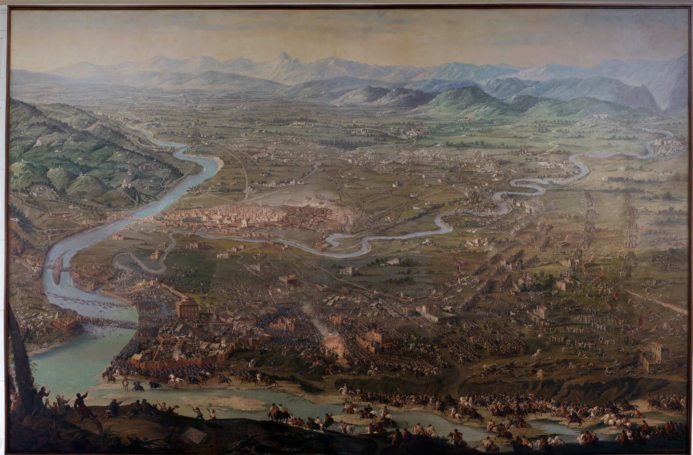

Il Museo arriva a Palazzo Carignano
Esplora questa stanza speciale. Questa sala conserva gli oggetti antichi che mostrano come era fatto il museo nel passato.
Tu puoi vivere una fantastica avventura nel tempo. Le persone ammiravano queste stesse cose molti anni fa per meravigliarsi.
Guarda queste due grandi statue bianche. Esse sono calchi, cioè copie in gesso di sculture vere. Esse mostrano Vittorio Amedeo II e suo cugino Eugenio. Questi due coraggiosi guerrieri della famiglia dei Savoia salvarono Torino dai nemici francesi moltissimi anni fa.
La famiglia dei Savoia divenne molto potente grazie a questa grande vittoria. Essi trasformarono Torino in una bellissima capitale. Essi diventarono anche i primi rLa famiglia dei Savoia divenne molto potente grazie a questa grande vittoria. Essi trasformarono Torino in una bellissima capitale. Essi diventarono anche i primi re d'Italia. Questa incredibile **avventura** diede inizio alla nascita del nostro paese unito.e d'Italia. Questa incredibile avventura diede inizio alla nascita del nostro paese unito.
Guarda questo grande dipinto che racconta un'avventura incredibile avvenuta a Torino nel 1706. I soldati francesi avevano circondato la città per cinque mesi. La gente soffriva la fame. I soldati combattevano persino sotto terra, dentro gallerie buie. I soldati di Torino hanno vinto la battaglia finale.
I calchi dei cannoni si trovano accanto al quadro. Un calco è una copia identica fatta in gesso. Questi modelli riproducono le vere armi usate per sparare durante la guerra. Questa esplorazione ti farà fare un viaggio nel tempo!

Scorri la Linea del Tempo!
Scorri la linea del tempo per scoprire le tappe che hanno segnato la storia del Museo Nazionale del Risorgimento Italiano.
Unificazione del Regno d'Italia
Il 17 marzo 1861 il Parlamento riunito a Palazzo Carignano proclama il Regno d'Italia. Vittorio Emanuele II diventa il primo re.
La donazione dei cimeli di Vittorio Emanuele II alla città di Torino
Alla morte del re, i suoi cimeli vengono donati a Torino dal figlio Umberto I. È il primo nucleo delle collezioni che daranno vita al Museo.
Esposizione Generale Italiana
Torino ospita l'Esposizione Generale Italiana: una sezione è dedicata alla storia del Risorgimento e raccoglie cimeli da tutta la penisola con un racconto nazional popolare.
Cinquantenario dello Statuto Albertino
Per i cinquant'anni dello Statuto concesso da Carlo Alberto, Torino celebra il Risorgimento con una grande mostra commemorativa.
Inaugurazione del Museo presso la Mole
Il Museo Nazionale del Risorgimento apre le sue porte nella Mole Antonelliana, allora destinata a ospitare le collezioni.
Cinquantenario dell'Unità d'Italia'
Per i cinquant'anni dell'Unità d'Italia, Torino celebra il Risorgimento con una grande mostra al Palazzo del Giornale. L'esposizione evidenzia il nesso tra il Risorgimento e lo sviluppo industriale di Torino.
Mostra Storica in Palazzo Carignano
Palazzo Carignano ospita una mostra storica dedicata al Risorgimento.
Il Museo si trasferisce a Palazzo Carignano
Per problemi strutturali della Mole Antonelliana, il Museo è costretto a cambiare sede. Dopo diversi spostamenti, le collezioni trovano collocazione definitiva a Palazzo Carignano, sede del primo Parlamento italiano.